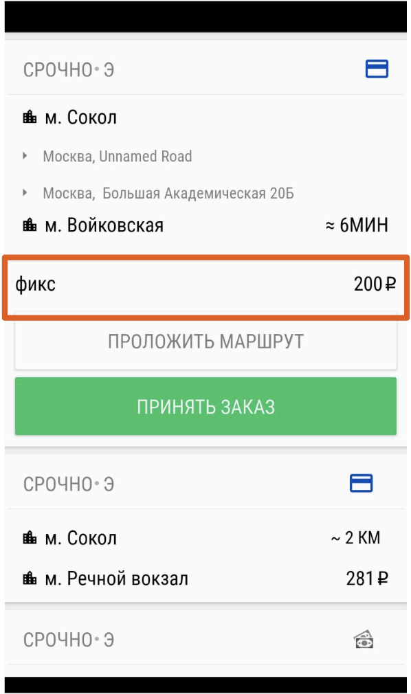
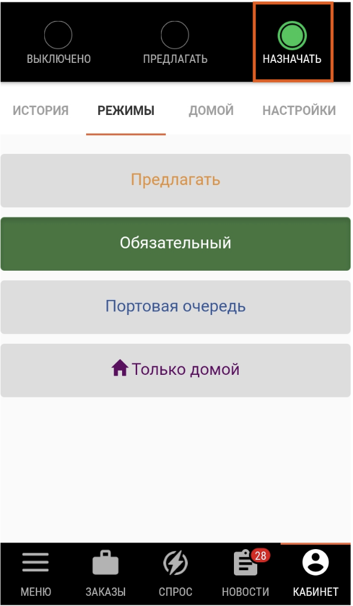
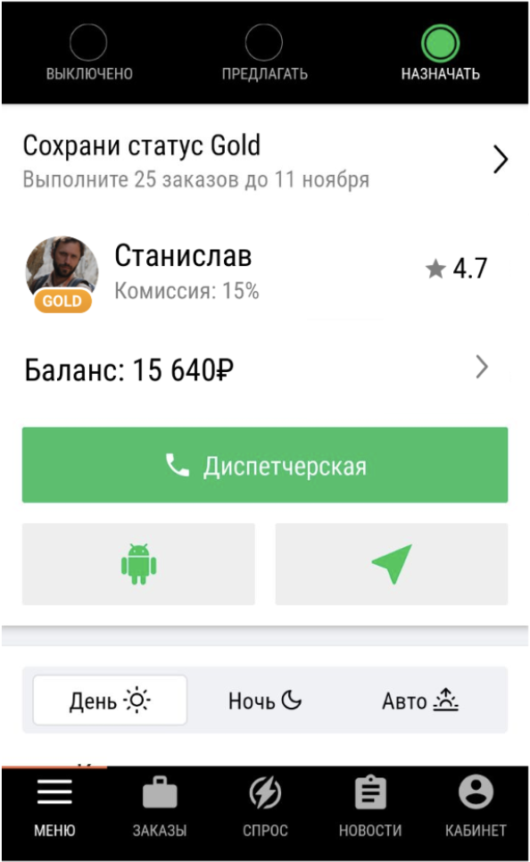
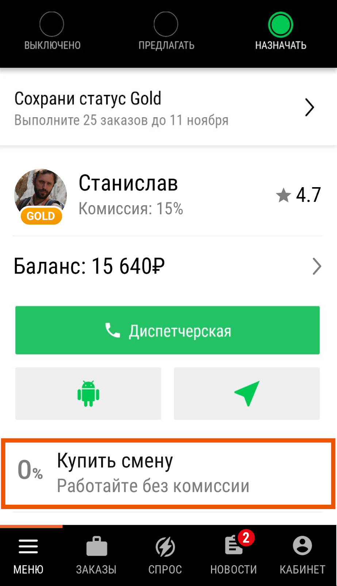

Бонусы для водителей Ситимобил
На этой странице вы найдете всю информацию о бонусных схемах для водителей Ситимобил.
Минималки

За каждую поездку каждый водитель Ситимобил гарантированно получает не меньше 200 рублей (до вычета комиссии) – вне зависимости от того, сколько платит пассажир. Вы можете быть уверены в стабильном доходе от поездок в любое время в любом районе города.

Зеленый робот
Зеленый робот (режим “Назначать”) разработан для того, чтобы вы эффективно использовали время и увеличивали свой доход. Как правило, на зеленом роботе система сама назначает вам заказы, и вам не нужно выбирать поездки из списка.
Иногда робот может не только назначать, но и предлагать вам заказы. Например, поездки за пределы МКАД или поездки с комментариями пассажиров. В отличие от стандартных заказов на зеленом роботе, их вы можете принять или отказаться. Это не влияет на ваши показатели.
Иногда робот может не только назначать, но и предлагать вам заказы. Например, поездки за пределы МКАД или поездки с комментариями пассажиров. В отличие от стандартных заказов на зеленом роботе, их вы можете принять или отказаться. Это не влияет на ваши показатели.

Преимущества
-
Приоритет в распределении заказов
В первую очередь заказы Ситимобил назначаются водителям, у которых включен зеленый робот. Это значит, что в режиме “Назначать” вы получаете доступ к заказам, которые не видны водителям в других режимах. То есть в этом режиме у вас больше заказов, а следовательно, меньше простой и выше доход. -
Повышенные минималки
В определенные часы в определенных районах города для водителей на зеленом роботе действуют повышенные минималки – до 600 рублей! Это значит, что вне зависимости от того, сколько платит пассажир, вы за каждый заказ получите не меньше установленной суммы. Следите за разделом “Новости” – там вы узнаете о расписании и зонах действия повышенных минималок. -
Персональная цель
Каждую неделю у вас может появиться персональная цель – возможность получить фиксированный бонус дополнительно к стоимости поездок. Все, что вам нужно сделать – включить зеленого робота и выполнить определенное количество заказов за установленный период времени.
В счет персональной цели учитываются все успешные поездки, совершенные на зеленом роботе. В том числе и заказы, которые система предлагает вам, когда у вас включен этот режим.
Если у вас есть персональная цель, вы увидите ее в разделе “Меню”.
Статус Gold
Статус Gold – специальная привилегия самых активных и лояльных водителей Ситимобил.
Преимущества
-
Пониженная комиссия
Для всех водителей со статусом Gold комиссия составляет всего 15% – включая комиссию партнера Ситимобил и НДС. Никакой скрытой платы за “пользование ПО” или каких-либо доплат. -
Повышенная минималка
В любое время и в любом районе заказы для вас будут стоить не менее 250 рублей. Вне зависимости от того, сколько за поездку платит пассажир. -
Бесплатная отмена
Со статусом Gold вы можете бесплатно отменить два заказа за сутки, а не один.

Получить статус можно двумя способами:
-
Совершите 75 поездок за календарную неделю
Рекомендуем включать зеленого робота (кнопка “Назначать”), ведь в этом режиме вы получаете больше всего заказов. Если вы совершили 75 поездок, вы автоматически получите статус Gold на последующую неделю. Присвоение статусов происходит каждый понедельник. -
Оклейте машину рекламой Ситимобил
Оклеить машину можно у наших партнеров по одному из двух адресов: ул. Селигерская, 18Б или ул. Москворечье, 14Б.
Оклейка машины
Совершайте поездки на автомобиле с брендингом Ситимобил, и вы автоматически получите статус Gold.
Владельцы брендированных машин также получают дополнительный бонус. Сумма зависит от класса автомобиля: Эконом и Стандарт – 4000 рублей/месяц, Комфорт и Бизнес – 6000 рублей/месяц.
Оклеить автомобиль можно у наших партнеров по одному из двух адресов: ул. Селигерская, 18Б или ул. Москворечье, 14Б.
Владельцы брендированных машин также получают дополнительный бонус. Сумма зависит от класса автомобиля: Эконом и Стандарт – 4000 рублей/месяц, Комфорт и Бизнес – 6000 рублей/месяц.
Оклеить автомобиль можно у наших партнеров по одному из двух адресов: ул. Селигерская, 18Б или ул. Москворечье, 14Б.
Смены
Для некоторых водителей, которые совершили более 100 поездок по Ситимобил, доступна опция покупки смен. Доступность смен вычисляется системой автоматически.
Если вам доступны смены, в разделе “Меню” вы увидите кнопку “Купить смену”. Нажмите на нее и выберите нужный вариант – 12 часов или 7 дней.
За все заказы, полученные в период действия смены, комиссия не будет списываться – даже если поездка закрыта после окончания смены.
То есть вам будет начислено 100% стоимости каждой поездки, вне зависимости от того, выполняете вы заказы по роботу или выбираете вручную из списка.
Если вам доступны смены, в разделе “Меню” вы увидите кнопку “Купить смену”. Нажмите на нее и выберите нужный вариант – 12 часов или 7 дней.
За все заказы, полученные в период действия смены, комиссия не будет списываться – даже если поездка закрыта после окончания смены.
То есть вам будет начислено 100% стоимости каждой поездки, вне зависимости от того, выполняете вы заказы по роботу или выбираете вручную из списка.
